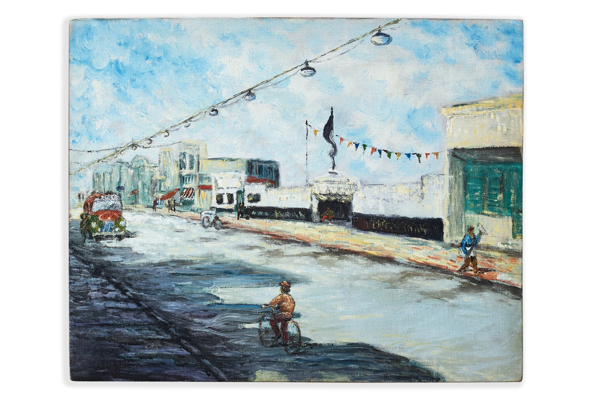
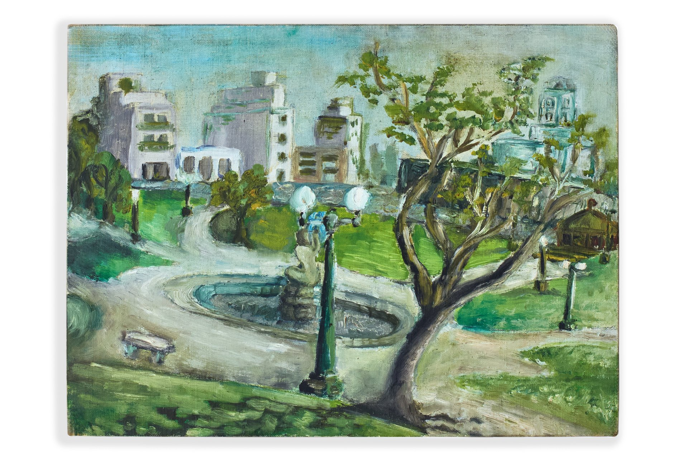
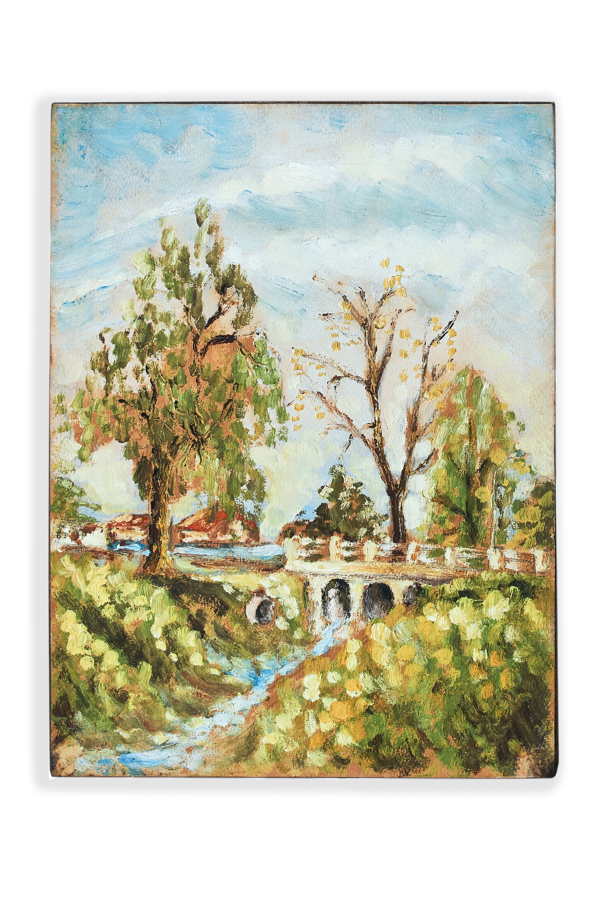
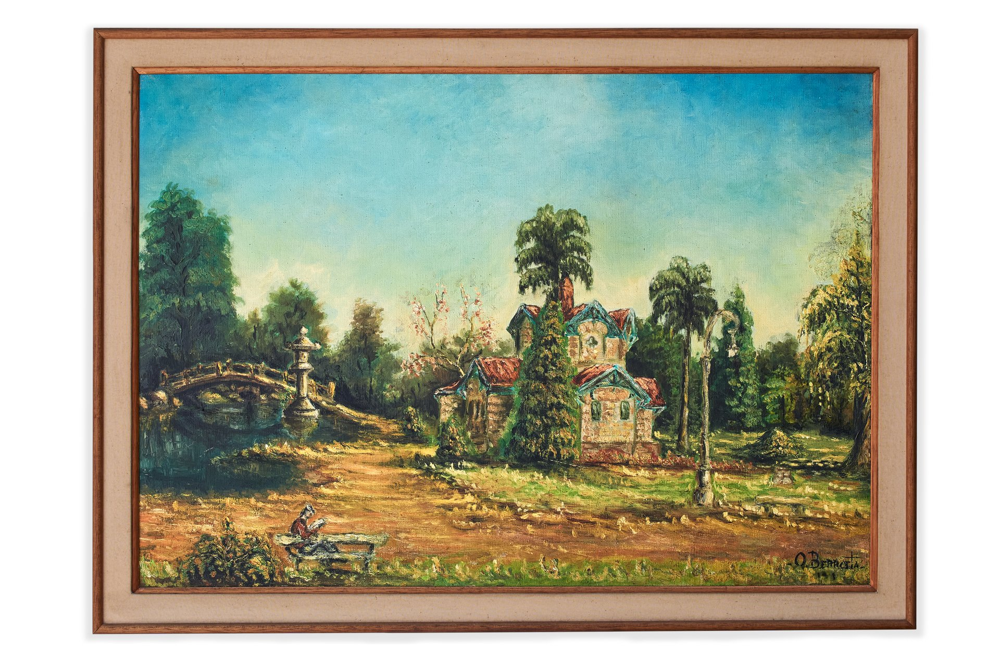
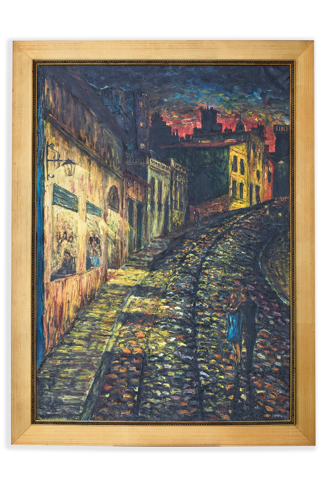
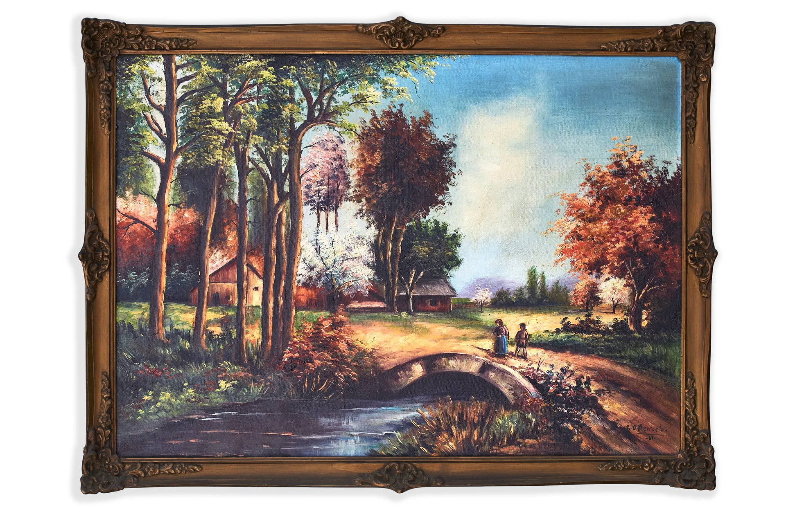
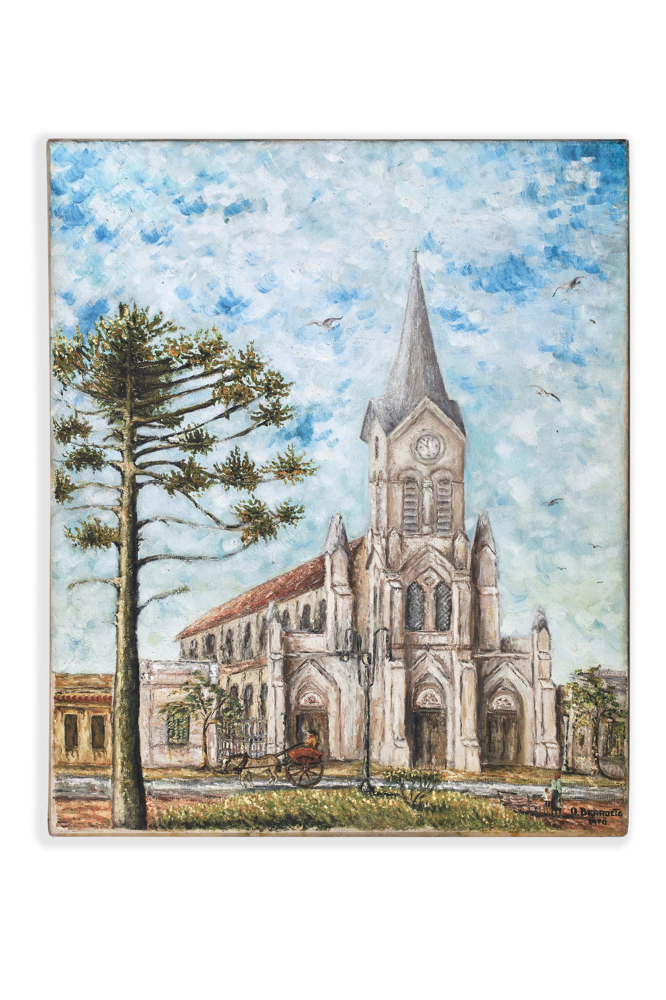
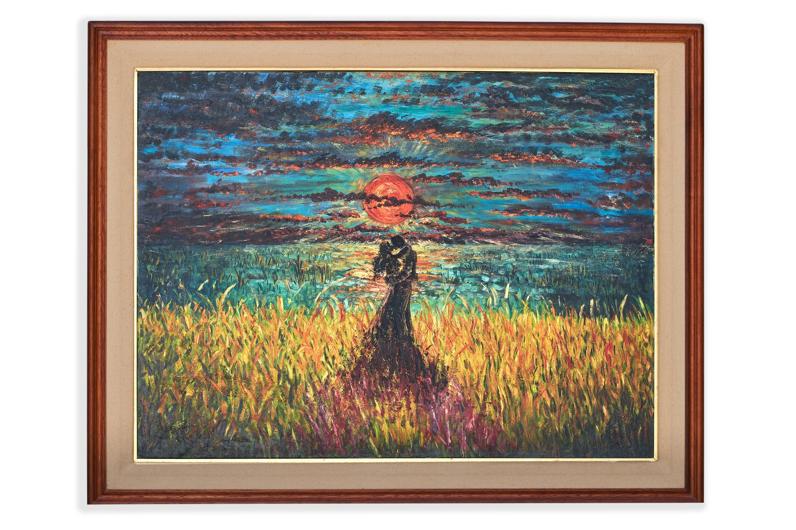

Galería de Obras

Club El Porvenir de Avellaneda
40 x 50 cm
1965
Primer premio - Concurso Cincuentenario
Témpera

Plaza Martín Fierro
30 x 40 cm
1968
Gran premio, Primera categoría
Témpera

Plaza calle Herrera
24 x 32 cm
Óleo sobre madera

Casa Joven en Palermo, Keny leyendo
50 x 70 cm
1968
Óleo

Calle de San Telmo
70 x 50 cm
Óleo

Casa con puente
50 x 70 cm
1964
Óleo

Iglesia de Rauch
60 x 50 cm
1970
Óleo

El atardecer
60 x 80 cm
Último cuadro
Óleo

Paisaje con luna
40 x 60 cm
1965
Óleo

Jineteada
40 x 50 cm
1969
Óleo

Dos burros
40 x 80 cm
1964
Óleo

Paisaje con patos
40 x 50 cm
1964
Óleo

Nieve
40 x 50 cm
1965
Óleo

Terraza de café por la noche
60 x 40 cm
1966
Reproducción de van Gogh
Óleo

Casa del lago
24 x 31 cm
1964
Témpera

Pesca en el lago
22 x 25 cm
Témpera

Torre en esquina
34 x 27 cm
1964
Témpera

Flores
26 x 22 cm
1964
Témpera

Cuadro pintado por Keny
20 x 28 cm
Hermano de Oscar
Témpera